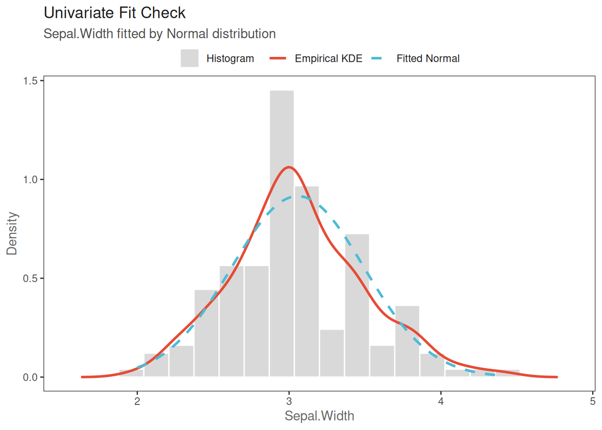
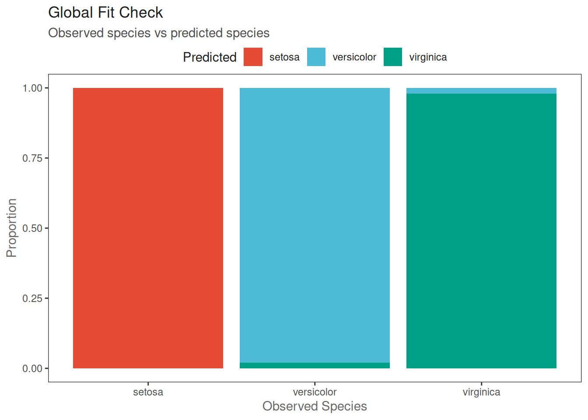
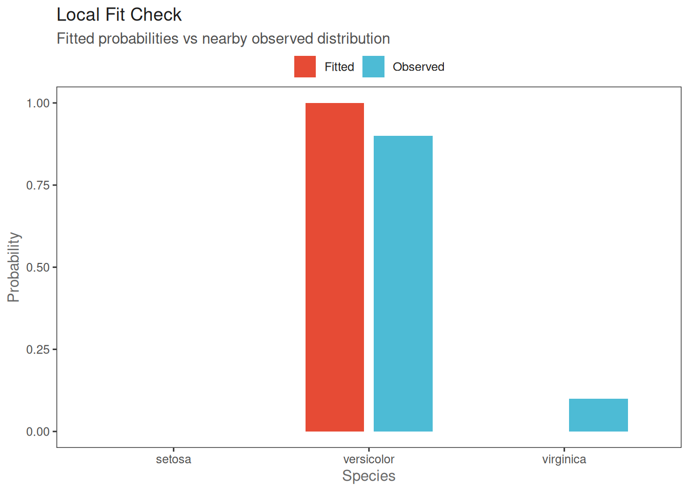

library(nnet)
library(ggplot2)
library(dplyr)
Attaching package: 'dplyr'The following objects are masked from 'package:stats':
filter, lagThe following objects are masked from 'package:base':
intersect, setdiff, setequal, unionlibrary(tidyr)
library(ggsci)
data(iris)
############################################################
# 1. Univariate Fit Check
# Sepal.Width ~ Normal
############################################################
y <- iris$Sepal.Width
mu_hat <- mean(y)
sd_hat <- sd(y)
df_emp <- data.frame(
x = density(y)$x,
y = density(y)$y
)
df_ana <- data.frame(
x = seq(min(y), max(y), length.out = 300)
)
df_ana$y <- dnorm(
df_ana$x,
mean = mu_hat,
sd = sd_hat
)
p1 <- ggplot() +
# Histogram
geom_histogram(
data = iris,
aes(
x = Sepal.Width,
y = after_stat(density),
fill = "Histogram"
),
bins = 20,
color = "white"
) +
# Empirical KDE
geom_line(
data = df_emp,
aes(x = x, y = y, color = "Empirical KDE"),
linewidth = 1
) +
# Fitted Normal
geom_line(
data = df_ana,
aes(x = x, y = y, color = "Fitted Normal"),
linetype = "dashed",
linewidth = 1
) +
scale_fill_manual(values = c(
"Histogram" = "grey85"
)) +
scale_color_manual(values = c(
"Empirical KDE" = "black",
"Fitted Normal" = "#3C78D8"
)) +
labs(
title = "Univariate Fit Check",
subtitle = "Sepal.Width fitted by Normal distribution",
x = "Sepal.Width",
y = "Density",
color = NULL,
fill = NULL
) +
theme_bw() +
scale_color_npg() +
theme(
legend.position = "top",
panel.grid = element_blank(),
axis.text = element_text(color = "grey30"),
axis.title = element_text(color = "grey40"),
plot.title = element_text(color = "grey10"),
plot.subtitle = element_text(color = "grey30"),
legend.text = element_text(color = "grey10"),
legend.margin = margin(b = -5)
)Scale for colour is already present.
Adding another scale for colour, which will replace the existing scale.p1
############################################################
# 2. Multivariate Regression
# Global Fit Check
############################################################
fit_multi <- multinom(
Species ~ Sepal.Length + Sepal.Width +
Petal.Length + Petal.Width,
data = iris,
trace = FALSE
)
summary(fit_multi)Call:
multinom(formula = Species ~ Sepal.Length + Sepal.Width + Petal.Length +
Petal.Width, data = iris, trace = FALSE)
Coefficients:
(Intercept) Sepal.Length Sepal.Width Petal.Length Petal.Width
versicolor 18.69037 -5.458424 -8.707401 14.24477 -3.097684
virginica -23.83628 -7.923634 -15.370769 23.65978 15.135301
Std. Errors:
(Intercept) Sepal.Length Sepal.Width Petal.Length Petal.Width
versicolor 34.97116 89.89215 157.0415 60.19170 45.48852
virginica 35.76649 89.91153 157.1196 60.46753 45.93406
Residual Deviance: 11.89973
AIC: 31.89973 iris_global <- iris %>%
mutate(
pred_class = predict(fit_multi, type = "class")
)
df_global <- iris_global %>%
count(Species, pred_class) %>%
group_by(Species) %>%
mutate(prop = n / sum(n))
p2 <- ggplot(
df_global,
aes(x = Species, y = prop, fill = pred_class)
) +
geom_col(position = "stack") +
labs(
title = "Global Fit Check",
subtitle = "Observed species vs predicted species",
x = "Observed Species",
y = "Proportion",
fill = "Predicted"
) +
theme_bw() +
scale_fill_npg() +
theme(
legend.position = "top",
panel.grid = element_blank(),
axis.text = element_text(color = "grey30"),
axis.title = element_text(color = "grey40"),
plot.title = element_text(color = "grey10"),
plot.subtitle = element_text(color = "grey30"),
legend.text = element_text(color = "grey10"),
legend.title = element_text(color = "grey10"),
legend.margin = margin(b = -5)
)
p2
############################################################
# 3. Multivariate Regression
# Local Fit Check
############################################################
x0 <- iris %>%
summarise(
Sepal.Length = mean(Sepal.Length),
Sepal.Width = mean(Sepal.Width),
Petal.Length = mean(Petal.Length),
Petal.Width = mean(Petal.Width)
)
x0_prob <- predict(
fit_multi,
newdata = x0,
type = "probs"
)
X <- iris[, c(
"Sepal.Length",
"Sepal.Width",
"Petal.Length",
"Petal.Width"
)]
X_scaled <- scale(X)
x0_scaled <- scale(
x0,
center = attr(X_scaled, "scaled:center"),
scale = attr(X_scaled, "scaled:scale")
)
dist_to_x0 <- sqrt(
rowSums(
sweep(X_scaled, 2, as.numeric(x0_scaled), "-")^2
)
)
iris_local <- iris %>%
mutate(distance = dist_to_x0) %>%
slice_min(distance, n = 30)
local_obs <- prop.table(
table(iris_local$Species)
)
df_local <- data.frame(
Species = names(x0_prob),
Fitted = as.numeric(x0_prob),
Observed = as.numeric(local_obs[names(x0_prob)])
)
df_local_long <- df_local %>%
pivot_longer(
cols = c(Fitted, Observed),
names_to = "Type",
values_to = "Probability"
)
p3 <- ggplot(
df_local_long,
aes(x = Species, y = Probability, fill = Type)
) +
geom_col(
position = position_dodge(width = 0.7),
width = 0.6
) +
labs(
title = "Local Fit Check",
subtitle = "Fitted probabilities vs nearby observed distribution",
x = "Species",
y = "Probability",
fill = NULL
) +
theme_bw() +
scale_fill_npg() +
theme(
legend.position = "top",
panel.grid = element_blank(),
axis.text = element_text(color = "grey30"),
axis.title = element_text(color = "grey40"),
plot.title = element_text(color = "grey10"),
plot.subtitle = element_text(color = "grey30"),
legend.text = element_text(color = "grey10"),
legend.margin = margin(b = -5)
)
p3
############################################################
# Save Figures
############################################################
ggsave("univariate_fit_check.svg", p1, width = 6, height = 4)
ggsave("global_fit_check.svg", p2, width = 6, height = 4)
ggsave("local_fit_check.svg", p3, width = 6, height = 4)
ggsave("univariate_fit_check.pdf", p1, width = 6, height = 4)
ggsave("global_fit_check.pdf", p2, width = 6, height = 4)
ggsave("local_fit_check.pdf", p3, width = 6, height = 4)